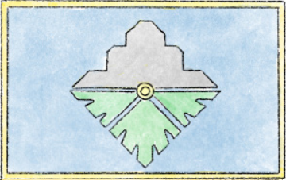
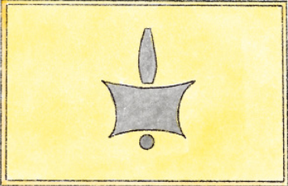

Crusader
Coftyran
Quar Battleforce Builder
Print
{{ unit.points }}
({{unit.allowed}})
{{ unit.name }}
+
Skill:
{{ unit.sk }}
Mt:
{{ unit.mt }}
Ma:
{{ unit.ma }}
Tgh:
{{ unit.toughness }}
Special Abilities:
{{ ability }}
Equipment:
{{ equip }}
R:
{{equipmentData[equip]?.R}}
Sn:
{{equipmentData[equip]?.Sn}}
Mt:
{{equipmentData[equip]?.Mt}}
Abilities:
{{ability}}
Use unit stats for melee.
{{selectedFaction}}


{{ totalPoints }} / {{ selectedPoints }}
Clear All
{{key}}:
{{def}}